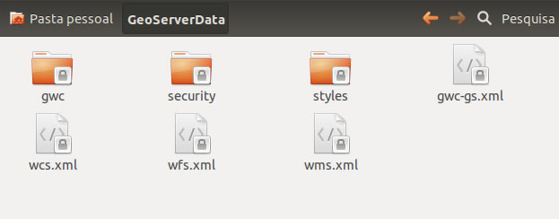

Seguindo a lógica da nossa instalação, o diretório que contém os dados de configuração do GeoServer está no diretório /var/lib/tomcat7/webapps/geoserver/data
Para facilitar na manutenção dos dados e facilitar nas atualizações do GeoServer, vamos alterar o diretório padrão para:
/home/<seu_usuario>/GeoServerData
Aviso
Verifique se o diretório GeoServerData tem permissão de leitura e escrita para o usuário tomcat7
Vamos alterar o arquivo /var/lib/tomcat7/webapps/geoserver/WEB-INF/web.xml para ficar como abaixo:
<context-param>
<param-name>GEOSERVER_DATA_DIR</param-name>
<param-value>/home/<seu_usuario>/GeoServerData</param-value>
<context-param>
Após as alterações devemos ter uma tela como abaixo

Organização do diretório:
data_directory/
global.xml
logging.xml
wms.xml
wfs.xml
wcs.xml
data/
demo/
gwc/
layergroups/
logs/
palettes/
security/
styles/
user_projections/
workspaces/
www/
Nota
No data_directory é onde o GeoServer armazena toda a sua configuração. Nela são definidas quais dados são servidos, onde os dados estão localizados, como devem ser os serviços. Há também um diretório de dados que contém uma série de arquivos de suporte usados pelo GeoServer.